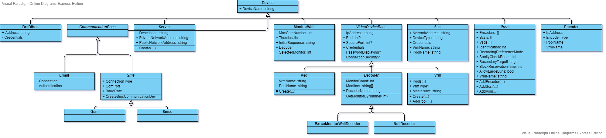

Main Classes
[[TOC]]
Devices
Classes which are derived from IDevice are the assets which are managed from BVMS as devices in the Device Tree. Usually these devices are only a dumb representation of the BVMS managed devices in the meaning that they mostly consists of properties (e.g. device name, IP address,...). But in some cases they also own a behavior. A VRM for instance offers the possibility to add a pool via the method AddPool and a pool offers the possibility to add an encoder, VSG, SCSI via AddEncoder, AddVsg and AddScsi.
All devices have one common property - that is the name of the device. Depending on the device type a device is listed in the DeviceTree on the left side or a pane on the right side.
All devices are derived from IDevice and Device.
The following picture gives an overview about the class hierarchy of devices.

DeviceConfig
The properties of a device are set during creation or update of a device. The necessary values are brought into the device via a belonging Config object. So each device Foo has a corresponding config object FooConfig. The config objects also form a hierarchy analogue to the hierarchy of the devices. And because they belong to devices they are implemented in a generic fashion:
public class DeviceConfig<T> : IDeviceConfig
where T : Device<T>
This allows later inside the creation and update of a device an easy access to the properties of the provided configuration.
The update of a device is done via this method:
public virtual Device<T> UpdateDevice(DeviceConfig<T> config)
So in the derived abstract VideoDeviceBase class we have this:
Still not nice are the casts in the concrete config class and the cast to Device<T>. Maybe in future versions we find a way to eliminate this.)
public override Device<T> UpdateDevice(DeviceConfig<T> config)
{
base.UpdateDevice(config);
var cfg = (VideoDeviceBaseConfig<T>) config;
IpAddress = cfg.IpAddress;
Port = cfg.Port;
ConnectionSecurity = cfg.ConnectionSecurity;
Credentials = cfg.Credentials;
return (T) this;
DeviceManager
To add and/or configure a device it is necessary to know how the device needs to be added. Some devices are added by using a context-sensitive menu at the device type node in the tree others are added via a button in the pane.
A DeviceManager is responsible to handle that logic for a specific device. That means each device needs a corresponding and individual DeviceManager. All these DeviceManagers are subclasses of DeviceManager.
AddDeviceDialog and EditDeviceDialog
During adding a device, most devices need some details specified via a dialog. These dialogs are subclasses of a generic class:
public abstract partial class AddDeviceDialog<T> : DeviceDialog<T>
where T : Device<T>
All devices with needs further details captured via a dialog, should derive from AddDeviceDialog<T> and implement the necessary individual logic. The same concerns the update case. There the base class is EditDeviceDialog<T>.
In former versions the device itself was used as an input parameter a device related dialog. The properties of that device were used as the information how the content of a dialog (the UI elements) needs to be configured. Usually this maps indeed 1:1 (if you have a property of a device, you need a UI element to specify the property - e.g. device name via text field, TCP port via an integer spinner, and so on). But in some rare cases this dependency was not enough to manage the interaction with the dialog comprehensively. For an example, in dialog with capturing passwords a checkbox Show password is available. This information (to show the password or to hide it) is not part of the device. It is only a functionality inside the dialog for interacting with the password field in a specific manner. Hence we recognized that the dialog configuration needs to get separated from the device which needs to be configured. Therefore to each device configuring dialog AddFooDialog or EditFooDialog now a configuration class AddFooDialogConfig respectively EditFooDialogConfig belongs. These config classes are used in the dialog constructors to configure the UI elements of this dialog.
Generic Dialog
From the perspective of the PageObject pattern (see also Page Object Pattern) and the best practices to return the subsequent PageObject (in case the dialog interaction will leave a PageObject), it seemed to be a good idea to see a dialog as a fork - the OK button returns the PageObject for the confirmation case and the Cancel button returns the PageObject for the other one. The PageObject for the confirmation case can be the PageObject of the next "dialog page" in case of a Next-Next-Finish chain of a wizard. The PageObject for the canceling case is most often the PageObject of the preceding context - e.g. the PageObject of the application itself in case you jump directly back to the application.
Both subsequent PageObjects are taken to design the interface of the GenericDialog as generic type parameters.
public class GenericDialog<TConfirmationPo, TCancelPo> : DialogBase
where TConfirmationPo : PageObject
where TCancelPo : PageObject
{
In an instantiable derivation the constructor is used to inject the two logics (as delegates) to return the subsequent PageObjects for the confirmation and cancelation case. Therefore the expected subsequent PageObject can exactly be pre-formed and easily used during stepping through such PageObject-chains in automated UI tests.
Today (2020/MAY) this design decision looks a little bit over-engineered with some too specific assumptions regarding the two cases and therefore two subsequent dialogs. In some rare cases a dialog has additional exits (and not only the assumpted two). Additionally during automated UI tests only one dedicated PageObject will be the expected one. So the second case will never happen in a concrete unit-test run. It must be clear which PageObject is the subsequent one, otherwise the automated UI test, would test in a too relaxed way. For these reasons it might be good enough to decrease the two type parameters to only one. So this unique PageObject is used as the one and only expected type parameter for the individual test case which is supposed to be realized.